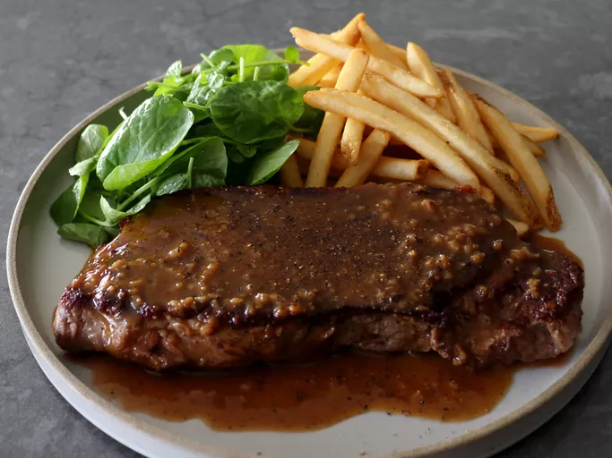

Bistro Style Steak

Home
Description
Bistro-style steak is a simple yet elegant dish inspired by the casual eateries of France. It typically features a tender cut of beef like sirloin, ribeye, or flank steak, seasoned generously with salt and pepper, then seared to perfection for a caramelized crust and juicy interior. Often served medium-rare, the steak is paired with a rich pan sauce—such as a red wine reduction or peppercorn sauce—and accompanied by classic sides like crispy fries, sautéed greens, or a fresh salad, making it a well-balanced and satisfying meal.
Bistro-style steak is a classic dish inspired by the unfussy yet elegant cuisine served in French cafés and neighborhood restaurants. It usually features a flavorful, tender cut of beef such as sirloin, ribeye, or flank steak, seasoned simply with salt, pepper, and sometimes fresh herbs. The steak is seared in a hot pan or on a grill to develop a caramelized, golden-brown crust while keeping the inside juicy and cooked to your preferred level of doneness—often medium-rare in true bistro fashion.
Ingredients
- 1 (14-ounce) New York strip steak
- 3/4 teaspoon kosher salt
- 1/2 teaspoon freshly ground black pepper
- 1 teaspoon vegetable oil
- 1 teaspoon melted clarified butter
- 2 tablespoons minced shallots
- 1/3 cup white wine
- 1/3 cup beef bone broth
- 2 tablespoons unsalted butter, cubed
Steps
- Preheat the oven to 425 degrees F (220 degrees C).
- Place hash browns in a medium bowl. Melt 5 tablespoons butter and pour over hash browns, season with seasoning salt or garlic powder as desired. Add 1 egg, mix well and press mixture onto the bottom and sides of a 9-inch spring form pan or pie dish.
- Bake in preheated oven until potatoes are golden brown and crispy around the edges, about 25 to 30 minutes.
- While crust bakes, melt remaining tablespoon of butter in a medium skillet over medium-high heat. Add ham, pepper, and green onion; cook and stir until bell pepper slightly softens, about 4 minutes. Remove from heat.
- When crust is ready, spread ham mixture over the bottom; sprinkle cheese evenly on top. Whisk remaining 5 eggs and cream in a medium bowl; add salt and pepper to taste and mix until well blended. Pour mixture evenly over ham and cheese mixture.
- Reduce oven temperature to 350 degrees F (175 degrees C.) Bake in the preheated oven until filling is puffed and quiche is lightly browned around the edges, about 35 minutes.